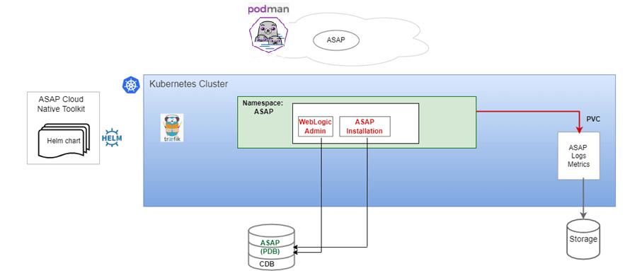

About the ASAP Cloud Native Deployment
You set up your own cloud native environment and can then use the ASAP cloud native toolkit to automate the deployment of ASAP instances. By leveraging the pre-configured Helm charts, you can deploy ASAP instances quickly ensuring your services are up and running in far less time than a traditional deployment. However, there are a few differences between traditional and cloud native deployments.
ASAP cloud native supports the following deployment models: - On Private Kubernetes Cluster: ASAP cloud native is certified for a general deployment of Kubernetes. - On Oracle Cloud Infrastructure Container Engine for Kubernetes (OKE): ASAP cloud native is certified to run on Oracle's hosted Kubernetes OKE service.
ASAP Cloud Native Architecture
This section describes and illustrates the ASAP cloud native architecture and the deployment environment.
The following diagram illustrates the ASAP cloud native architecture. Figure 1-1 ASAP Cloud Native Architecture

The ASAP cloud native architecture requires components such as the Kubernetes cluster. The WebLogic domain is static in the Kubernetes cluster. For any modifications, you should update the ASAP image and redeploy it. The ASAP cloud native artifacts include a container image built using Podman and the ASAP cloud native toolkit.
Downloading the ASAP Cloud Native Artifacts
About the ASAP Image Toolkit
The ASAP image builder toolkit (asap-img-builder.zip) creates an image with a base image as Linux 8 and installs prerequisite packages, Java, WebLogic Server, database client, OPatch, Release Updates, and ASAP. The toolkit contains scripts to install the required packages and installers.
The image building process consists of manual steps. ASAP database is not part of the ASAP image. The database should be accessible from Podman host machine and the Kubernetes cluster
About ASAP Instance
ASAP instance in the Kubernetes cluster includes deployment, service, and Ingress route. The ASAP image is created using the image builder toolkit, which deploys the ASAP instance in the Kubernetes cluster by using the ASAP cloud native toolkit.
Once the instance is up, you should not perform any configuration changes such as deploying a new cartridge, changing configuration parameters, and so on. If you want to perform such changes, update the ASAP image and redeploy the instance.
About the ASAP Cloud Native Toolkit
The ASAP cloud native toolkit (asap-cntk.zip) is an archive file that includes utility scripts and samples to deploy ASAP in a cloud native environment.
Contents of the ASAP Cloud Native Toolkit The ASAP cloud native toolkit contains the following artifacts:
- Helm charts for ASAP:
- The Helm chart for ASAP is located in the
asap_cntk/charts/asapdirectory.
- The Helm chart for ASAP is located in the
- Scripts to manage the lifecycle of an ASAP instance
About Helm Overrides
The specifications of the ASAP deployment are consumed from the values.yaml file. The values defined in the values.yaml file are used by deployment, service, and ingress yaml files.
Update the values accordingly to create multiple instances.